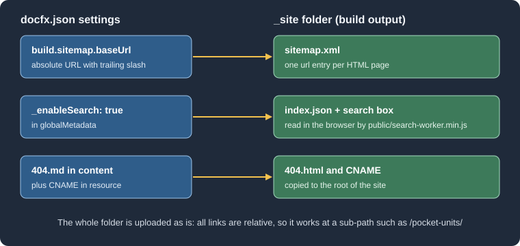

Deployment
|
This content was generated with the assistance of AI and should be verified against the official documentation before being relied on in production. |
This page was written against DocFX 2.81.0 (released on 2026-09-25, the latest release at the time) and checked on
2026-10-26. The build, sitemap, search and 404 examples were run with that version in the
mcr.microsoft.com/dotnet/sdk:10.0 Docker image against the Pocket Units documentation project. The workflow was
checked with a linter but could not be run, because it needs a GitHub repository, and the Azure DevOps pipeline was not
executed either. The docfx.json keys used here are explained in docfx.json,
and the commands in CLI.
What gets deployed
docfx build writes a plain static site into the folder named by build.output (_site in every example of this
section). DocFX has no server component: the official quick start describes the result as static HTML ready for any
static hosting server, so deploying means copying that folder to a host. The build of the Pocket Units project with the
settings shown later in this page produced these top-level entries:
_site/
404.html (from a 404.md in the content)
CNAME (copied by a resource mapping)
api/ (one HTML page per namespace and type)
favicon.ico
index.html
index.json (search index, only with _enableSearch)
logo.svg
manifest.json
public/ (CSS, JavaScript, fonts, Mermaid and KaTeX bundles of the modern template)
sitemap.xml (only with build.sitemap.baseUrl)
toc.html
toc.json
xrefmap.ymlEvery link and asset reference in the generated HTML is relative. The stylesheet link is public/docfx.min.css on the
home page and ../public/docfx.min.css on a page under api/, so the site works unchanged at the root of a domain and
under a sub-path such as the /pocket-units/ path of a GitHub project site. There is no base URL setting to keep in
sync with the host, unlike the baseUrl of some other tools. The exception is the sitemap, which needs absolute URLs and
therefore has its own setting.

The figure shows which settings add files to the output folder. The remaining sections describe the two deployment routes and then those settings in detail.
Preparing the project for CI
A CI job needs three things: a .NET SDK, the docfx tool and the command that builds. The tool is a .NET global tool
published on NuGet, so installing a specific version is one command:
dotnet tool install --global docfx --version 2.81.0
docfx docfx.json --warningsAsErrorsSource: DocFX docs: Quick start
The official quick start uses dotnet tool update -g docfx, which installs the latest version when the tool is missing.
Pinning with install --version makes a build reproducible, and raising the number is then a deliberate change. In the
test, the first command printed nothing and the build printed:
Build succeeded.
0 warning(s)
0 error(s)docfx build treats a broken link as a warning, not an error. With a deliberately broken link in index.md, the build
printed the warning InvalidFileLink: Invalid file link:(~/missing.md)., wrote the site anyway and, with
--warningsAsErrors, ended with exit code 255. Use the flag in CI if a broken page should stop the deployment; without
it the pipeline stays green.
DocFX needs a .NET SDK even to build only Markdown, because it is itself a .NET tool. The contributor documentation lists
SDK 8, 9 and 10 as supported, and 2.81.0 was run here on SDK 10.0.403. The metadata step builds your projects, so the
SDK that the job installs must also be able to restore and build them.
GitHub Pages with GitHub Actions
GitHub Pages can publish either from a branch or from a workflow artifact. The artifact route needs no gh-pages
branch: the build job uploads the folder as a Pages artifact and a second job deploys it. In the repository settings,
under Pages, the source must be set to GitHub Actions for this to work. The DocFX quick start documents this route, but
its example uses old action majors and a comment that still says the target is the gh-pages branch. The workflow
below uses the current ones.
Current action versions
The latest releases on 2026-10-26, read from the GitHub releases of each repository:
| Action | Latest | Released | Used for |
|---|---|---|---|
|
v7.0.1 |
2026-07-20 |
Fetch the repository sources. |
|
v6.0.0 |
2026-07-16 |
Install the .NET SDK. v6 migrated the action to ESM and updated its dependencies. |
|
v6.0.0 |
2026-03-25 |
Enable and configure Pages. Optional for DocFX, because DocFX needs no site base path. |
|
v5.0.0 |
2026-04-10 |
Package the output folder as the Pages artifact. |
|
v5.0.1 |
2026-09-01 |
Publish the artifact to Pages. |
For comparison, the DocFX repository’s own publishing workflow uses checkout@v7, upload-pages-artifact@v5 and
deploy-pages@v5, and the quick start example on the DocFX site still shows checkout@v3, setup-dotnet@v3,
upload-pages-artifact@v3 and deploy-pages@v4. The pinned major tags move with each release line, so check the
releases again when you copy a workflow.
The workflow
name: Publish documentation
on:
push:
branches: [main]
workflow_dispatch:
permissions:
contents: read
pages: write
id-token: write
concurrency:
group: pages
cancel-in-progress: false
jobs:
build:
runs-on: ubuntu-latest
steps:
- uses: actions/checkout@v7
- uses: actions/setup-dotnet@v6
with:
dotnet-version: 10.x
- name: Install DocFX
run: dotnet tool install --global docfx --version 2.81.0
- name: Build the site
run: docfx docfx.json --warningsAsErrors
- uses: actions/configure-pages@v6
- uses: actions/upload-pages-artifact@v5
with:
path: _site
deploy:
needs: build
runs-on: ubuntu-latest
environment:
name: github-pages
url: ${{ steps.deployment.outputs.page_url }}
steps:
- id: deployment
uses: actions/deploy-pages@v5The pieces that matter:
-
permissionsgives the job tokenpages: writeandid-token: write, whichdeploy-pagesneeds to prove the deployment comes from this workflow.contents: readis enough for the checkout. -
The
concurrencygroup serialises deployments and never cancels one that is running, which is the pattern the official example also uses. -
The
github-pagesenvironment is created by GitHub the first time Pages is enabled, and its URL is filled in from the output of the deploy step. -
pathof the upload step is the DocFX output folder. For a project whosedocfx.jsonis in a sub-folder, build with that path and upload<folder>/_site. -
The workflow was checked with the
rhysd/actionlintlinter, which reported nothing. It was not run on GitHub, so the Pages settings, environment protection rules and token permissions of your own repository are untested here.
The Mermaid diagram shows the two jobs and how the Azure DevOps route described below differs.
Hidden files in the artifact
Since v4.0.0 of upload-pages-artifact (2025-08-14), files and folders that start with a dot are not included in the
artifact. A .nojekyll file therefore does not reach the site through this route, and it is not needed: Jekyll
processing applies to branch deployments, and DocFX output contains no folder that starts with an underscore. The
include-hidden-files input was added in v5.0.0 for the cases where a dotfile matters. If you deploy from a branch
instead (see the next section), a .nojekyll file at the root of the branch does no harm.
Azure DevOps
The DocFX documentation has a page for building in Azure DevOps and pushing the result to the gh-pages branch of a
GitHub repository. Azure Pipelines does the build, GitHub only serves the files, so the pipeline needs a GitHub personal
access token that is allowed to write to the repository. The steps are: create the token, store it as a secret variable
in a variable group, add the pipeline file, and set the Pages source branch to gh-pages in the GitHub settings.
trigger:
branches:
include:
- main
pool:
vmImage: ubuntu-latest
variables:
- group: GitHubPAT
steps:
- task: UseDotNet@2
displayName: Install the .NET SDK
inputs:
packageType: sdk
version: 10.x
- script: dotnet tool install --global docfx --version 2.81.0
displayName: Install DocFX
- script: |
export PATH="$PATH:$HOME/.dotnet/tools"
docfx docfx.json --warningsAsErrors
displayName: Build the documentation
- bash: |
git config --global user.email "<YOUR_EMAIL>"
git config --global user.name "<YOUR_NAME>"
git clone --branch gh-pages "https://${GITHUB_PAT}@github.com/${GITHUB_REPO}.git" out
rm -rf out/*
cp -r _site/* out/
cd out
git add --all
git commit -m "Update documentation"
git push origin gh-pages
displayName: Deploy to GitHub Pages
env:
GITHUB_PAT: $(GITHUB_PAT)
GITHUB_REPO: <YOUR_ACCOUNT>/<YOUR_REPOSITORY>This pipeline follows the structure of the official page; the differences are the pinned DocFX version, the
--warningsAsErrors flag, the SDK version and the explicit PATH line (a global tool lives in ~/.dotnet/tools, which
is not on the path of a fresh agent job unless the setup step added it). The variable group GitHubPAT holds a secret
variable named GITHUB_PAT; never write the token in the YAML file. Azure Pipelines masks secret variables in the log,
but the token is part of the clone URL, so do not add set -x to the script. This pipeline was not executed, because it
needs an Azure DevOps organisation and a GitHub token. The official page assumes the gh-pages branch already exists
(git clone --branch gh-pages fails otherwise), so create it once, for example with an empty commit, before the first
run.
The rm -rf out/* line does not remove hidden files, so a CNAME or .nojekyll committed at the root of the branch
survives each deployment. If you prefer to keep them in the source, add them to the build as resources, as described
below.
DocFX itself has no Azure-specific features. The output is static, so the same _site folder can be copied to any other
host: the build step is the part that is the same everywhere, and only the final copy changes.
Sitemap
A sitemap is generated only when build.sitemap.baseUrl is set. The key is described on
docfx.json; this section shows the deployment-relevant part. The base
URL must be the absolute address at which the site will be served, with a trailing slash, because the URLs written
into sitemap.xml are this value followed by the page path:
{
"metadata": [
{
"src": [{ "src": "src", "files": ["**/*.csproj"] }],
"dest": "api"
}
],
"build": {
"content": [
{ "files": ["api/**.yml", "api/index.md", "toc.yml", "*.md"] }
],
"globalMetadata": {
"_appName": "Pocket Units",
"_appTitle": "Pocket Units",
"_enableSearch": true
},
"output": "_site",
"template": ["default", "modern"],
"sitemap": {
"baseUrl": "https://example.github.io/pocket-units/",
"changefreq": "weekly"
}
}
}Source: DocFX docs: Config, sitemap
The build printed Sitemap file is successfully exported to /w/_site/sitemap.xml and the file listed one entry per
HTML page:
https://example.github.io/pocket-units/api/PocketUnits.Converter.html
https://example.github.io/pocket-units/api/PocketUnits.LengthUnit.html
https://example.github.io/pocket-units/api/PocketUnits.html
https://example.github.io/pocket-units/index.htmlFor a project site on GitHub Pages the base URL is https://<ACCOUNT>.github.io/<REPOSITORY>/; for a custom domain it
is that domain, and it must match what search engines will crawl. lastmod defaults to the build time, so every
deployment changes every date; set it explicitly or per file with fileOptions if that matters. A page set up as the
404 page also lands in the sitemap, as the next section shows, which is not useful to crawlers.
DocFX does not add a Sitemap: line to a robots.txt. If you want one, keep a robots.txt file in the project and
copy it to the output with a resource mapping (see below), writing the absolute sitemap URL in it yourself.
Search
Site search is a client-side feature: no server is involved, which is why it works on a static host. It is switched on
by the template metadata _enableSearch, set in globalMetadata as in the example above. Two builds of the same project
showed the difference:
| Build | _site content |
Home page |
|---|---|---|
|
|
A search form with an input is present. |
|
No |
No search form. |
The index.json file maps each page to its address, title and a text summary. The modern template’s script
public/search-worker.min.js refers to this file, so the query runs in the browser against it. The template reference
describes _enableSearch as the switch that shows the search box and _noindex as the switch that decides whether a
page appears in the results, for both the modern and default templates. This page verified the behaviour only for the
modern template. The 2.81.0 release notes also state that search.min.js of the modern template can be overridden, which
is the extension point for changing the search script (see
Templates and Customization).
Because the index is a single file that every visitor downloads on the first query, its size grows with the content.
Large API sites should check the size of index.json after a build. The search box needs the files to be served
over HTTP; opening _site/index.html from the disk is not the way to test it, and docfx docfx.json --serve publishes
the folder on port 8080 for that purpose.
404 page and custom domain
GitHub Pages serves a file named 404.html from the root of the site for unknown addresses. DocFX produces one if the
content contains a 404.md. The test file was:
# Page not found
Go back to the [home page](index.md).and the content mapping of docfx.json already matched it, because its *.md pattern picks up every Markdown file of
the project root. The page was built to
_site/404.html. Its stylesheet link is the relative public/docfx.min.css, so a visitor who requests a missing page
at a deeper address, such as /pocket-units/missing/page, receives HTML whose relative paths point to the wrong folder;
the text of the page appears but the template styling may not load. Use a minimal 404 page, or one whose styling does not
depend on relative paths, if that matters to you.
Files that are not content, such as a CNAME file for a custom domain or robots.txt, are copied through a resource
mapping:
{
"build": {
"content": [
{ "files": ["api/**.yml", "api/index.md", "toc.yml", "*.md"] }
],
"resource": [
{ "files": ["CNAME", "robots.txt"] }
],
"output": "_site"
}
}Source: DocFX docs: Config, build
In the test, a CNAME containing the custom host name was copied unchanged to _site/CNAME. For deployments through the
Pages artifact route, GitHub takes the custom domain from the repository settings; a CNAME file matters for branch
deployments.
Pitfalls and version notes
-
A sitemap needs
baseUrl; without it there is nositemap.xmland no log message. -
Search needs
_enableSearch; without it there is noindex.jsonand no search box in the modern template. -
The quick start example in the official documentation uses
actions/checkout@v3,actions/setup-dotnet@v3,actions/upload-pages-artifact@v3andactions/deploy-pages@v4, which are older than the versions in the table above. They are still published tags, but newer majors exist; the release notes ofdeploy-pagesv5 andconfigure-pagesv6 list an update to Node.js 24. -
A broken link is only a warning unless
--warningsAsErrorsis passed; the exit code was 255 in the test. -
upload-pages-artifactomits dotfiles since v4.0.0. -
If
docfxis reported as not found right after the install step, the global tools folder is not on the path of the job. The Azure DevOps example on this page adds it explicitly; this was not needed in the test container, where the same line was used. -
The build output includes large bundles (
public/holds many Mermaid and Lunr language chunks in the modern template). They are loaded on demand, but they count towards the size of the deployed site. -
DocFX 2.81.0 records its own version in
manifest.json, which is handy when you need to see which version produced a deployed site.